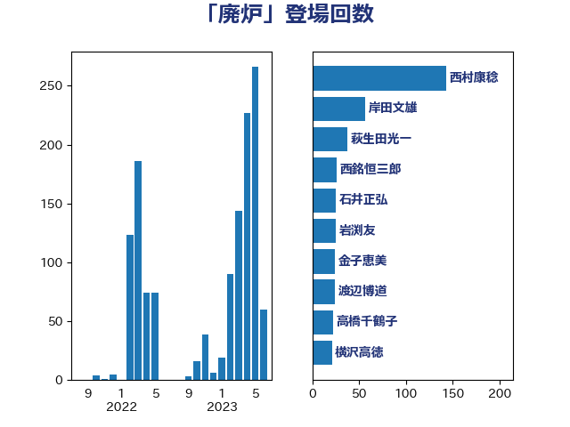

単語「廃炉」

| 西村康稔 | 自由民主党 | 143 回 |
| 岸田文雄 | 自由民主党 | 57 回 |
| 萩生田光一 | 自由民主党 | 38 回 |
| 西銘恒三郎 | 自由民主党 | 26 回 |
| 石井正弘 | 自由民主党 | 25 回 |
| 岩渕友 | 日本共産党 | 25 回 |
| 金子恵美 | 立憲民主党 | 24 回 |
| 渡辺博道 | 自由民主党 | 24 回 |
| 高橋千鶴子 | 日本共産党 | 22 回 |
| 横沢高徳 | 立憲民主党 | 21 回 |
| 石井章 | 日本維新の会 | 19 回 |
| 青島健太 | 日本維新の会 | 17 回 |
| 新妻秀規 | 公明党 | 17 回 |
| 櫛渕万里 | れいわ新選組 | 16 回 |
| 馬場雄基 | 立憲民主党 | 15 回 |
| 庄子賢一 | 公明党 | 15 回 |
| 山本太郎 | れいわ新選組 | 15 回 |
| 鬼木誠 | 立憲民主党 | 14 回 |
| 荒井優 | 立憲民主党 | 14 回 |
| 笠井亮 | 日本共産党 | 14 回 |
| 横山信一 | 公明党 | 14 回 |
| 岸真紀子 | 立憲民主党 | 14 回 |
| 前川清成 | 日本維新の会 | 14 回 |
| 芳賀道也 | 国民民主党 | 13 回 |
| 舩後靖彦 | れいわ新選組 | 13 回 |
| 山崎誠 | 立憲民主党 | 13 回 |
| 大島敦 | 立憲民主党 | 13 回 |
| 遠藤良太 | 日本維新の会 | 12 回 |
| 礒崎哲史 | 国民民主党 | 11 回 |
| 村田享子 | 立憲民主党 | 11 回 |
| 末松信介 | 自由民主党 | 11 回 |
| 野間健 | 立憲民主党 | 10 回 |
| 米山隆一 | 立憲民主党 | 9 回 |
| 竹詰仁 | 国民民主党 | 9 回 |
| 玄葉光一郎 | 立憲民主党 | 9 回 |
| 塩田博昭 | 公明党 | 9 回 |
| 音喜多駿 | 日本維新の会 | 8 回 |
| 里見隆治 | 公明党 | 8 回 |
| 落合貴之 | 立憲民主党 | 8 回 |
| 中野洋昌 | 公明党 | 8 回 |
| 細田健一 | 自由民主党 | 7 回 |
| 石垣のりこ | 立憲民主党 | 7 回 |
| 浜地雅一 | 公明党 | 7 回 |
| 鈴木俊一 | 自由民主党 | 6 回 |
| 掘井健智 | 日本維新の会 | 6 回 |
| 山添拓 | 日本共産党 | 6 回 |
| 山岡達丸 | 立憲民主党 | 6 回 |
| 伊東信久 | 日本維新の会 | 6 回 |
| 上田清司 | 国民民主党 | 6 回 |
| 高橋はるみ | 自由民主党 | 5 回 |
| 福島伸享 | 無所属 | 5 回 |
| 田村まみ | 国民民主党 | 5 回 |
| 永岡桂子 | 自由民主党 | 5 回 |
| 小沢雅仁 | 立憲民主党 | 5 回 |
| 三浦靖 | 自由民主党 | 5 回 |
| 鈴木敦 | 国民民主党 | 4 回 |
| 福山哲郎 | 立憲民主党 | 4 回 |
| 石川博崇 | 公明党 | 4 回 |
| 田島麻衣子 | 立憲民主党 | 4 回 |
| 柳ヶ瀬裕文 | 日本維新の会 | 4 回 |
| 小熊慎司 | 立憲民主党 | 4 回 |
| 小沼巧 | 立憲民主党 | 4 回 |
| 太田房江 | 自由民主党 | 4 回 |
| 鈴木義弘 | 国民民主党 | 3 回 |
| 野田国義 | 立憲民主党 | 3 回 |
| 進藤金日子 | 自由民主党 | 3 回 |
| 逢坂誠二 | 立憲民主党 | 3 回 |
| 赤羽一嘉 | 公明党 | 3 回 |
| 谷公一 | 自由民主党 | 3 回 |
| 若松謙維 | 公明党 | 3 回 |
| 空本誠喜 | 日本維新の会 | 3 回 |
| 神谷裕 | 立憲民主党 | 3 回 |
| 滝波宏文 | 自由民主党 | 3 回 |
| 水岡俊一 | 立憲民主党 | 3 回 |
| 早坂敦 | 日本維新の会 | 3 回 |
| 平林晃 | 公明党 | 3 回 |
| 山本剛正 | 日本維新の会 | 3 回 |
| 小野泰輔 | 日本維新の会 | 3 回 |
| 鈴木憲和 | 自由民主党 | 2 回 |
| 菅家一郎 | 自由民主党 | 2 回 |
| 臼井正一 | 自由民主党 | 2 回 |
| 竹内譲 | 公明党 | 2 回 |
| 秋葉賢也 | 自由民主党 | 2 回 |
| 福田昭夫 | 立憲民主党 | 2 回 |
| 石川昭政 | 自由民主党 | 2 回 |
| 田嶋要 | 立憲民主党 | 2 回 |
| 浦野靖人 | 日本維新の会 | 2 回 |
| 梅村聡 | 日本維新の会 | 2 回 |
| 枝野幸男 | 立憲民主党 | 2 回 |
| 星野剛士 | 自由民主党 | 2 回 |
| 平山佐知子 | 無所属 | 2 回 |
| 宗清皇一 | 自由民主党 | 2 回 |
| 大島九州男 | れいわ新選組 | 2 回 |
| 堤かなめ | 立憲民主党 | 2 回 |
| 堀場幸子 | 日本維新の会 | 2 回 |
| 吉田とも代 | 日本維新の会 | 2 回 |
| 吉川沙織 | 立憲民主党 | 2 回 |
| 亀岡偉民 | 自由民主党 | 2 回 |
| 中谷真一 | 自由民主党 | 2 回 |
| 三浦信祐 | 公明党 | 2 回 |
| 高市早苗 | 自由民主党 | 1 回 |
| 青山繁晴 | 自由民主党 | 1 回 |
| 階猛 | 立憲民主党 | 1 回 |
| 阿部知子 | 立憲民主党 | 1 回 |
| 長峯誠 | 自由民主党 | 1 回 |
| 辻元清美 | 立憲民主党 | 1 回 |
| 菅直人 | 立憲民主党 | 1 回 |
| 篠原孝 | 立憲民主党 | 1 回 |
| 神谷宗幣 | 参政党 | 1 回 |
| 神田潤一 | 自由民主党 | 1 回 |
| 浅田均 | 日本維新の会 | 1 回 |
| 河西宏一 | 公明党 | 1 回 |
| 江島潔 | 自由民主党 | 1 回 |
| 柴愼一 | 立憲民主党 | 1 回 |
| 本庄知史 | 立憲民主党 | 1 回 |
| 末松義規 | 立憲民主党 | 1 回 |
| 山本順三 | 自由民主党 | 1 回 |
| 尾身朝子 | 自由民主党 | 1 回 |
| 寺田静 | 無所属 | 1 回 |
| 宮口治子 | 立憲民主党 | 1 回 |
| 嘉田由紀子 | 無所属 | 1 回 |
| 和田有一朗 | 日本維新の会 | 1 回 |
| 古屋範子 | 公明党 | 1 回 |
| 北村経夫 | 自由民主党 | 1 回 |
| 勝部賢志 | 立憲民主党 | 1 回 |
| 中村裕之 | 自由民主党 | 1 回 |
| 中川康洋 | 公明党 | 1 回 |
| ながえ孝子 | 無所属 | 1 回 |